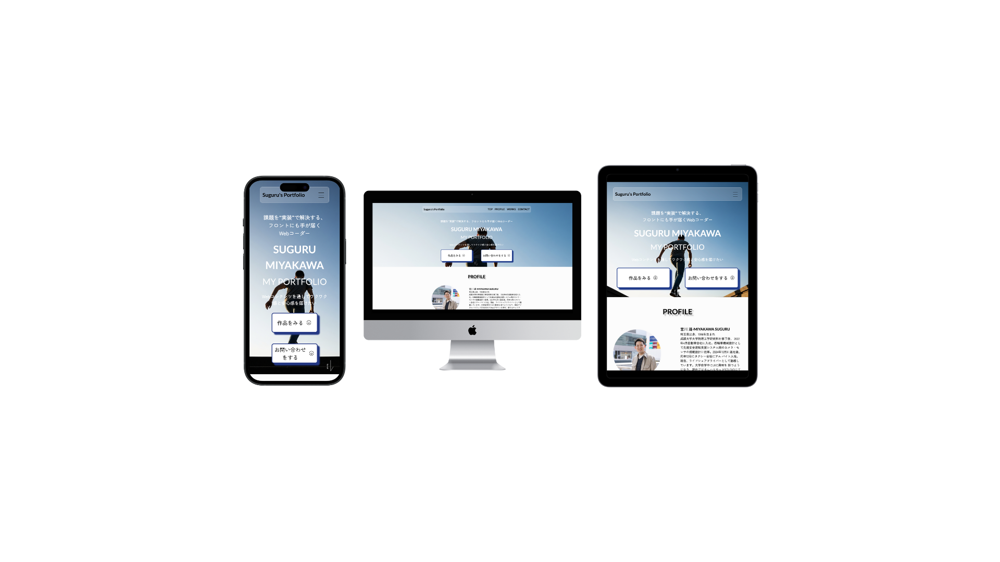
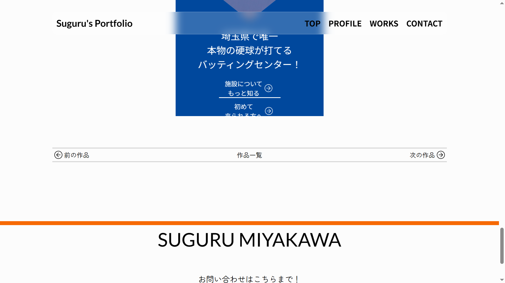
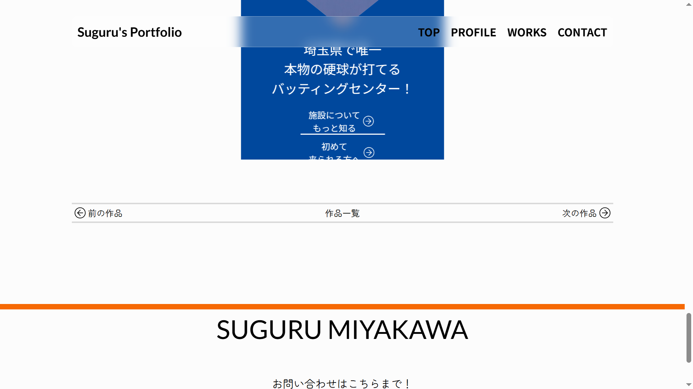
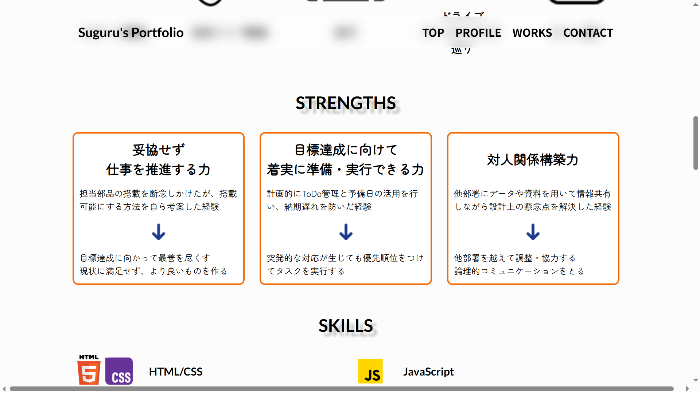

【自主制作】
SUGURU MIYAKAWA
ポートフォリオ
サイト

OVERVIEW
成長し続けるフロントエンドエンジニア・宮川雄
SUGURU MIYAKAWAのポートフォリオサイトです。
採用担当者に採用へと繋げるため、人となりや作品紹介を通して向上心がある・勉強熱心であるエンジニアであることをアピールしました。
- 担当範囲：ディレクション・デザイン・コーディング
- 使用ツール：HTML・CSS・JavaScript・jQuery・illustrator・Photoshop・Figma
- 制作期間：1ヶ月
PURPOSE/TARGET
目的
採用担当者に「この人となら一緒に仕事できそう」「エンジニアとしてのポテンシャルがありそう」という印象をもたせ、最終的に採用へと繋げる
ターゲット
フロントエンドエンジニアを募集している企業様
POINTS
目的に合わせた導線設計
採用担当者の方は忙しい方も多いと想定されるため、ファーストビューに作品一覧・お問い合わせボタンを設置することで、すぐに作品を閲覧できるように設計しました。また、各作品紹介ページ下部にページ送りのナビゲーションを設置することで、TOPページに戻ることなく直接他の作品ページにアクセスするように実装しました。
 

過程型の情報設計
コンテンツ面では、特に作品と思考過程を見てもらうことで、私自身のデザインへの取り組み方や考え方を理解してもらいたいと考えました。そのため、作品制作の目的から完成までの流れを示し、なぜこのようなデザインとなったのかを記載しました。

デザイン面
ネイビー(誠実さ・安心感)、ホワイト(自由)、オレンジ(ワクワク感・成長)を用いて宮川が生きる上で大切にしている価値観をイメージしました。また、Zen Maru Gothicを用いることで、知的だが優しい印象を表現しました。
配色
フォント
- Zen Maru Gothic
- Lato
